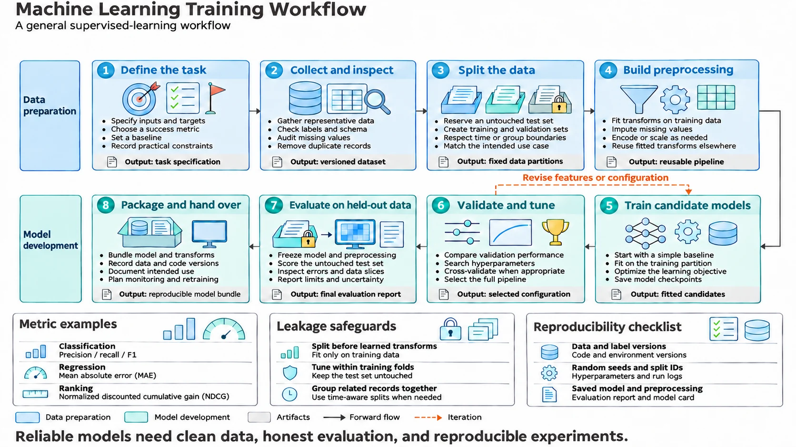
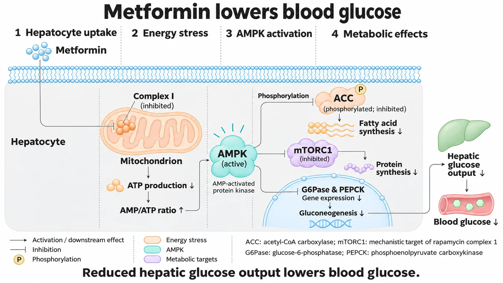
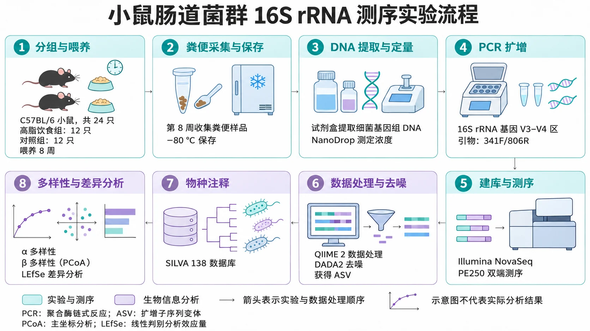

Made by Codex from a one-paragraph request
Each figure was made end to end by a fresh Codex session that had only this skill and the request: content plan, brief, generation with image_gen, the text check, colour and line measurements, and targeted edits. They are shown at the 1672 × 941 px that Codex returns; click one to open it at full size.

RAG system architecture
"Draw an architecture overview of a RAG (retrieval-augmented generation) system for a tech blog, with English labels. The content is up to you; follow common practice."


Machine-learning training workflow
"Draw an overview of a machine-learning model training workflow for our team's tech-talk slides, with English labels. The content is up to you; follow common practice."


How metformin lowers blood glucose
"Draw a mechanism figure for group-meeting slides, with English labels: metformin enters hepatocytes and inhibits mitochondrial complex I; ATP production falls and the AMP/ATP ratio rises, activating AMPK; AMPK phosphorylates and inhibits ACC, so fatty-acid synthesis falls; it inhibits mTORC1, so protein synthesis falls; and it suppresses the gluconeogenic genes G6Pase and PEPCK, so hepatic glucose output and blood glucose fall."


16S rRNA sequencing workflow, in Chinese
"Draw an experimental workflow for group-meeting slides, with Chinese labels: 16S rRNA sequencing of mouse gut microbiota. 24 C57BL/6 mice in a high-fat-diet group and a control group of 12 each, fed for 8 weeks; faeces collected in week 8 and stored at −80 °C; bacterial genomic DNA extracted with a kit and measured on a NanoDrop; the V3–V4 region of the 16S rRNA gene amplified with primers 341F/806R; libraries sequenced PE250 on an Illumina NovaSeq; data processed in QIIME 2, denoised to ASVs with DADA2 and annotated against SILVA 138; then α diversity, β diversity (PCoA) and LEfSe."
What it does
One skill for the whole path from an idea or a data file to a file a journal accepts.
Figures from your agent's image tool
Graphical abstracts, mechanisms, pathways, workflows, roadmaps, frameworks, model and system architectures, from layouts per figure type, a six-layer content plan, tested styles and a measured palette.
Text that is checked
OCR compares every label with the brief. A misspelling read the same way twice is a verdict to fix, not a guess to wave away.
A measured look
Fill colour and line weight are measured against published figures, not judged by eye, and corrected with targeted edits.
Larger figures
The same image tool redraws a figure tile by tile to 1.6–2.1 times its size, with real detail rather than interpolation.
Charts from your data
matplotlib at a journal's column width and fonts, colour-blind-safe, as vector PDF. Your data never passes through an image model.
Diagrams that must be exact
PRISMA and CONSORT flows, circuits, plasmid maps and phylogenetic trees are drawn in code, with every count checked.
Files ready to submit
TIFF, PNG and PDF at a journal's width and dpi, multi-panel figures, editable PPTX and SVG, pre-submission checks and legend drafts.
Journal rules, dated
Figure specifications of 10 publishers and AI-image policies of 9, so the agent asks where a figure is going before it draws.
How a figure is made
- You ask in plain words, and say where the figure is going: a journal, slides, a poster.
- The agent plans what the figure carries, taking the facts of your own work only from what you said.
- It writes a brief that leaves the image tool nothing to guess: every element, its wording, its colours and every connector.
- The image tool draws it. The bundled scripts read back every label and measure colour and line weight.
- Faults are fixed with targeted edits. The hand-over gives the file's size, what was checked, what was assumed, and the brief and edits for an AI disclosure.
Install
Needs Node.js 18.3 or later, and uv for the Python scripts. Setup shows its plan and asks before it writes anything.
npx scifig-agents setup # install into the agents found on this machine npx scifig-agents setup --dry-run # show the plan only npx scifig-agents doctor # what is installed where, image tools, uv npx scifig-agents uninstall # remove only what setup installed
It detects the same 29 agents as rea-agents. Codex's image_gen is tested end to end. Antigravity has generate_image but has not been run yet. Agents without an image tool draw concept figures in code; charts, checks and exports work everywhere. See the supported agents.